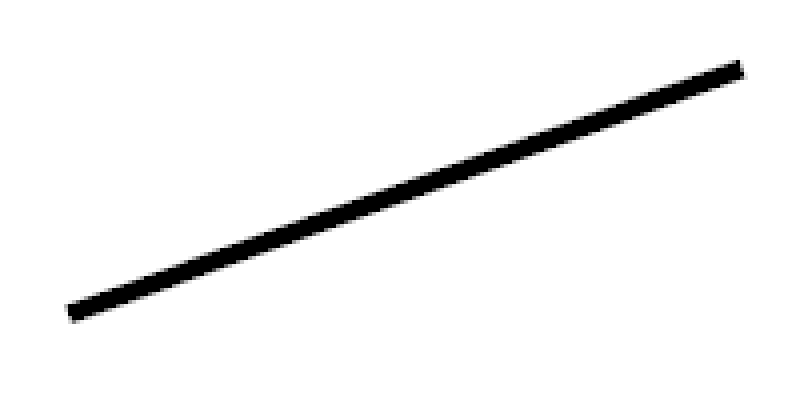
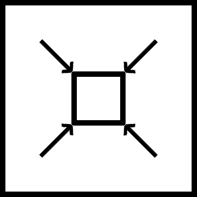
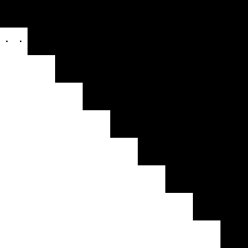
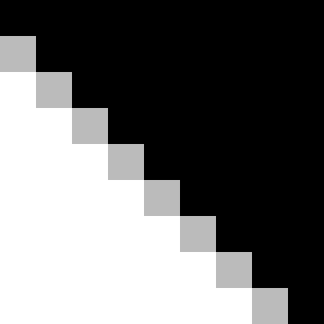

Статья посвящена тому, как сглаживать отображаемые графические элементы. В статье рассмотрены 2 метода сглаживания. В данной статье рассматривается сглаживание для отображения, как двух-мерной, так и трёх-мерной графики, на примере отображения прямой линии.
Сглаживание — это технология для устранения эффекта зубчастости.
Всего алгоритмов сглаживания, в статье, два.
Вот они:
Для начала построим прямую на изображении 200 на 100 точек. Вот оно увеличенное в 4 раза:
Рис. 1. Увеличенное изображение прямой на кадре размером 200 на 100 точек.
Сам процесс сглаживания на основе сверх-образца построен на том, что изображение строится на увеличенном кадре, а потом линейно уменьшается.
Вот пример прямой, построенной на кадре в 4 раза больше предыдущего (800 на 400 точек).

Рис. 2. Изображение прямой на кадре размером 800 на 400 точек.
Теперь линейно уменьшим его до кадра размером 200 на 100 точек (уменьшим в 4 раза). Вот пример этого рисунка, увеличенного после всего в 4 раза:

Рис. 3. Линейно уменьшенное изображение прямой, предыдущего рисунка, на кадр размером 200 на 100 точек.
Как вы видите прямые на Рисунке 1 и Рисунке 3 построены одинаково (одинакового размера), но различны: прямая на Рисунке 3 получилась со сглаживанием.
Этот алгоритм требует, чтобы изображение было построено пропорционально на увеличенном кадре (холсте), а потом уменьшен во столько раз на меньший холст:

Рис. 4. Уменьшение кадра.
Сглаживание построено на том, что для каждого пикселя строятся опорные точки. Сколько опорных точек попало в область — на столько область и рисуется.
Часть прямой без этого сглаживания выглядит так:

Рис. 5. Часть прямой без сглаживания.
Для каждого пикселя строятся опорные точки.

Рис. 6. Опорные точки пикселя.
Построим опорные точки для всех пикселей, для пикселей полностью попавших в область (со всеми опорными точками) закрашиваем их.

Рис. 7. Опорные точки пикселей.
Закрасим пиксели, опорные точки которых попали в объект частично, в соответствии с тем количеством точек, которые попали в границы объекта:

Рис. 8. Сглаживание на основе множественного образца.
В заключение могу Вам пожелать разработки своего графического редактора. Также изучайте черчение (начертательную геометрию), оно Вам пригодиться в программировании в дальнейшем.